In Meddbase a user conducting a Consultation is presented with a Clinical Form, which is a set of various types of fields, e.g., Free Text fields or Dropdown menus and more, allowing the user to capture specific information regarding their encounter with the patient.
Clinical Forms can only be accessed from a Consultation.
You can create your own bespoke Clinical Forms using the Clinical Form builder, for more guidance on this please see How to use the Clinical Form Builder.
This article describes:
Types of actions that can initiated with Action Buttons.
An action button is an optional element that can be included on your Clinical Form based on your request and requirements.
Action Button(s) allow the Clinician (Medical Person) conducting a consultation to initiate various actions.
The actions that can be initiated with an Action Button(s) are:
Any button initiating any of the below actions can be labelled as you see fit.
| Action | Description |
| Add Extra Services | Add additional services to the current appointment. |
| Assign Task | Assign a task to another user, linked to the patient being seen. Opens the task generation/assignment screen. |
| Close Case | Closes the case associated with the episode being recorded. Used primarily for case referrals. |
| Discharge | Discharges the current appointment. |
| Follow Up | Books a follow-up appointment. Only available if the appointment originates from a referral. |
| Pathology Lab Request | Send or print requests for pathology tests associated with the appointment. |
| Prescribe | Opens the prescription window for clinicians to prescribe medications. |
| Prescribe Repeat | Allows Attendees to issue a repeat prescription by selecting a previous prescription. |
| Enables Attendees to create or select a document for printing. Opens the template generation screen. | |
| Print from Template | Creates a document using a specific template and opens it for editing or printing. Requires template ID. |
| Refer | Initiates a new referral for the patient being seen. |
| Request Observation | Launches a new pathology request to select tests without adding services to the appointment. |
| Run Triggers | Activates pathways waiting for the "appointment completed" action and displays the pathway task. |
| Run Triggers Async | Triggers pathways waiting for the "appointment completed" action without displaying the task. |
| Run Triggers Async Then Discharge | Triggers pathways and discharges the appointment without displaying the task. |
| Run Triggers Then Discharge | Activates pathways, discharges the appointment, and displays the pathway task. |
| Send Follow Up Request | Creates a new follow-up referral from an Occupational Health referral. Only for OH appointments. |
| Send Follow Up Request and Discharge | Creates a follow-up referral from an OH referral and discharges the appointment. |
| Start Pathway | Allows the clinician to select and start a pathway. |
| Start Pathway Definition | Initiates a specific pathway using a defined ID. Requires the pathway ID as a parameter. |
Initiating this action opens the New Task window.
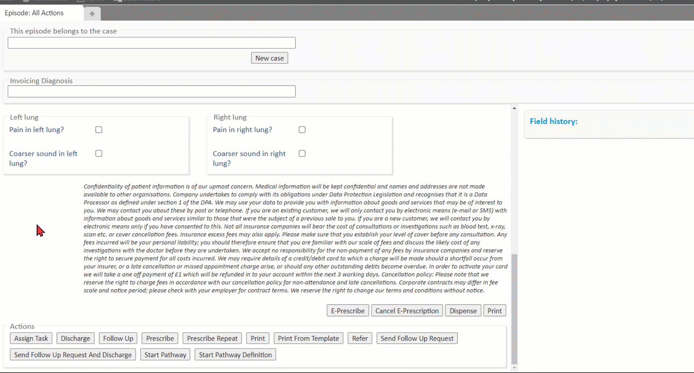
Initiating this action discharges the appointment (changes the appointment status to 'Discharged').
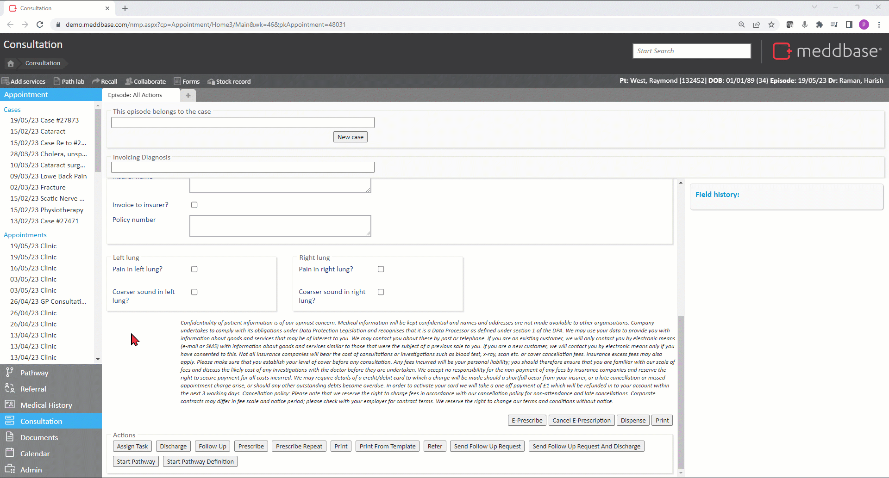
Initiating this action opens the Incoming Referral dialog window.
This action can only be initiated from Appointments that were booked from a Referral.
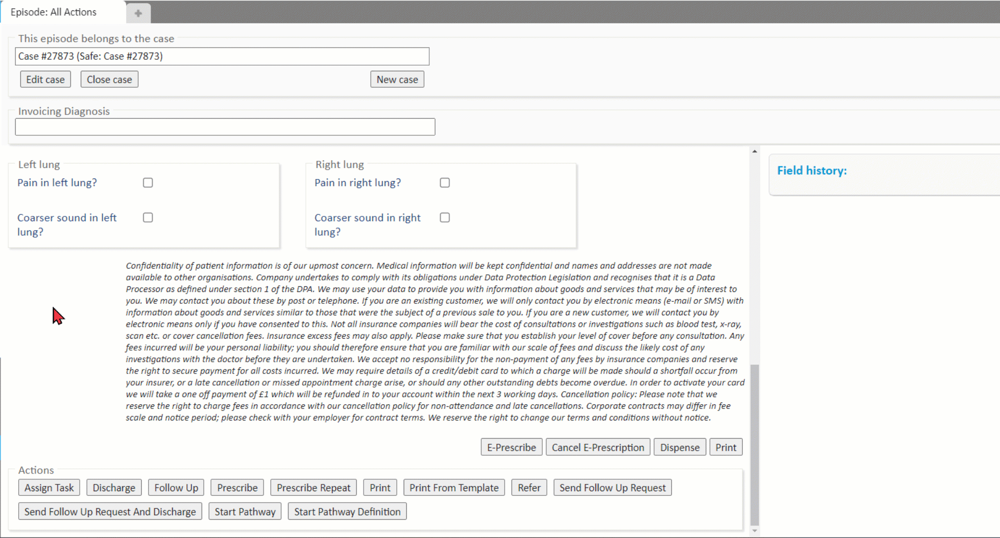
Initiating this action opens the Prescription dialog window.
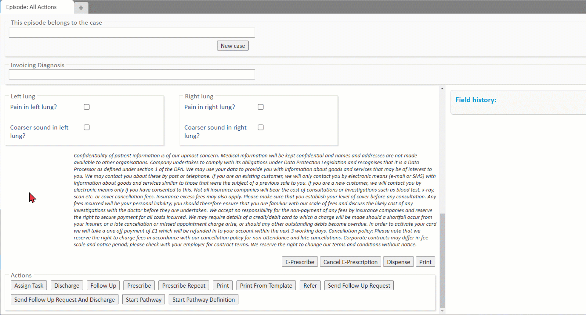
Initiating this action opens the Repeat Prescription window.
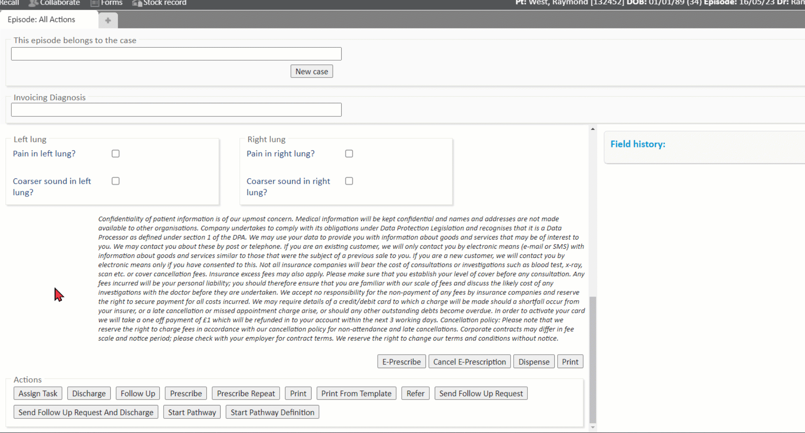
Initiating this action generates a Document from a specific template
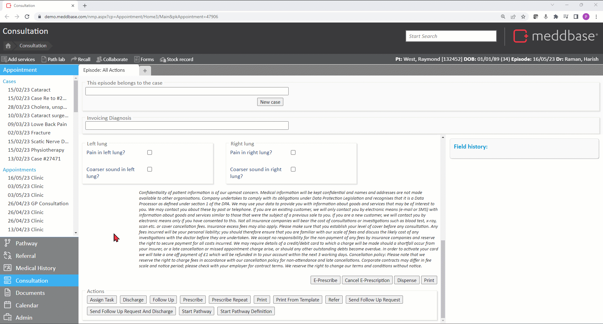
Initiating this action triggers a specific Template to generate a document and open it in a new tab for editing.
Linking this button to a particular Template requires providing the Meddbase Solution Engineer team ID for that Template. The ID can be obtained be navigating to Templates > click the relevant template > click Edit > obtain the ID from the Template URL
Initiating this action triggers the Referral workflow.
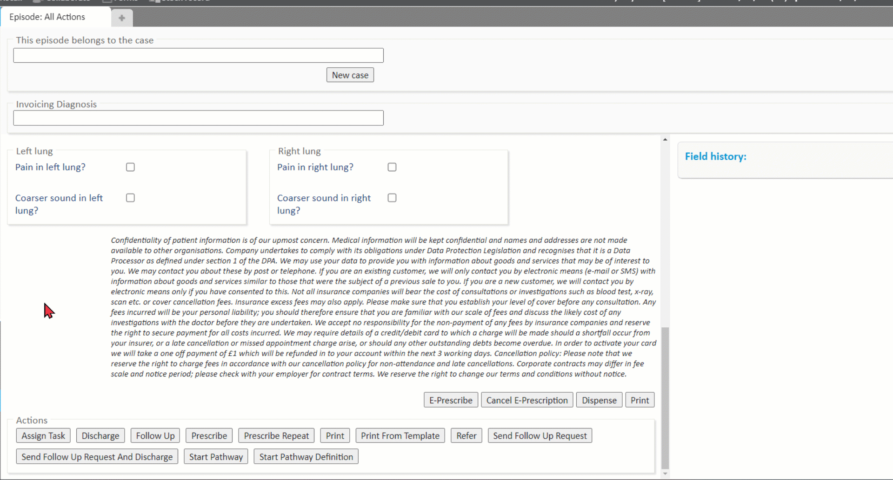
Initiating this action triggers the Outbound Referral workflow.
This action can only be initiated from an Appointment booked from an Occupational Health Referral.
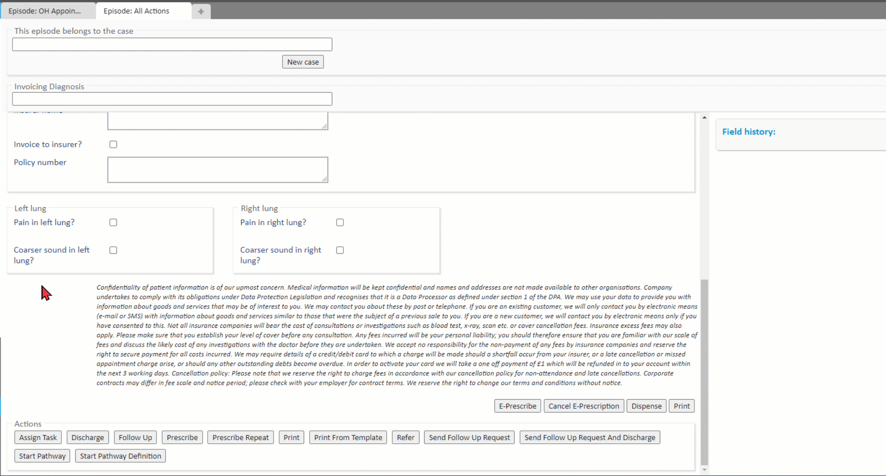
Initiating this action triggers the Outbound Referral workflow and discharges the appointment.
This action can only be initiated from an Appointment booked from an Occupational Health Referral.
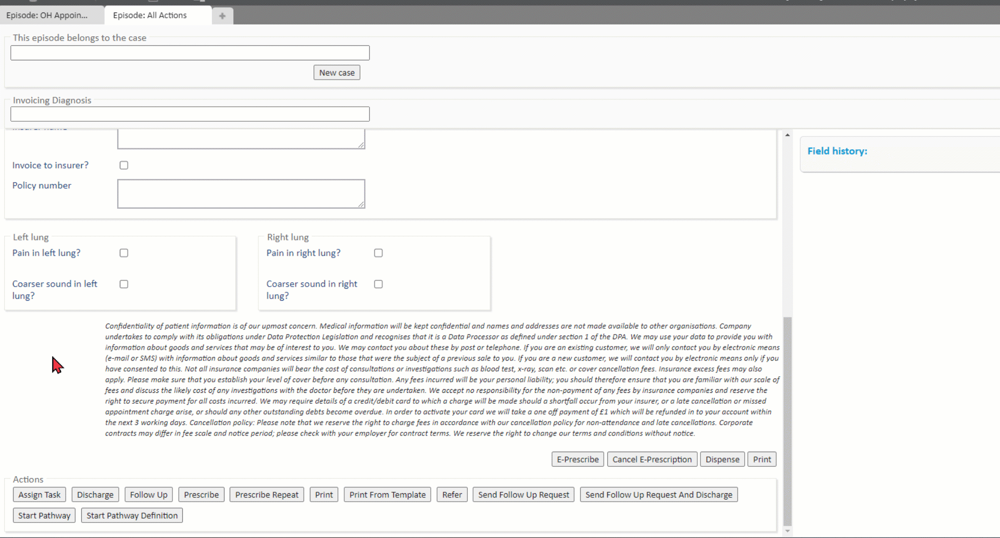
Initiating this action opens the Pathway selection window.
Initiating this action allows utilising the Pathway system in Meddbase. Please reach out to the client Account Management Team on accountmanagement@meddbase.com to if you are interested in using Pathways in your chamber.
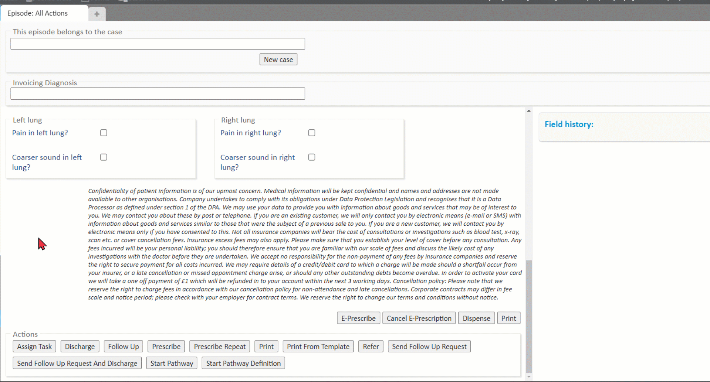
Initiating this action starts a specific Pathway.
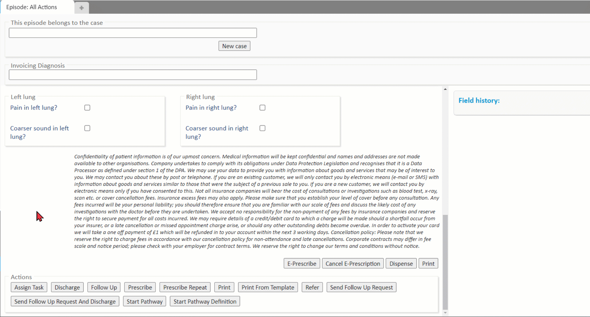